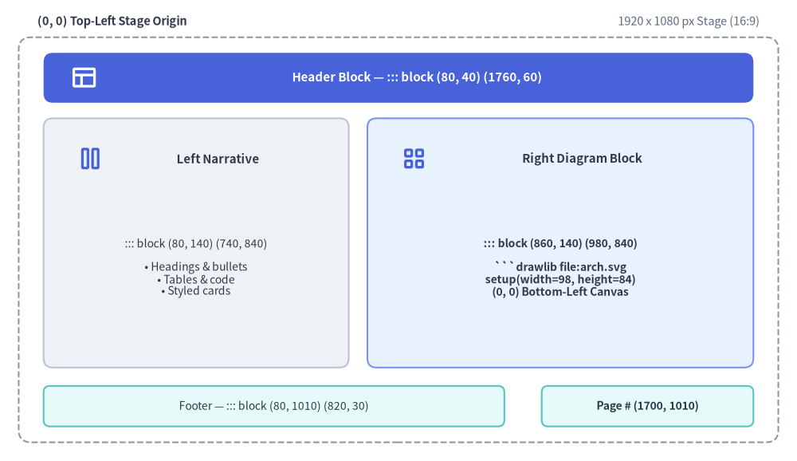
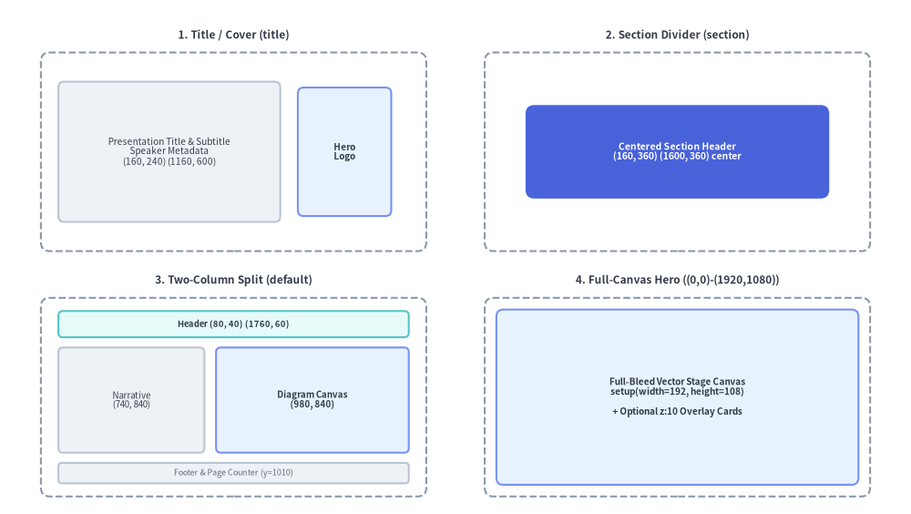

Slide Stage Layout & API
When authoring 16:9 widescreen presentation decks (drawlib init slide), Drawlib provides a precision 1920 × 1080 pixel virtual stage (::: block, ::: note), built-in layout patterns, inline vector SVG font bundling, and the programmatic drawlib.slide Python runtime API (current_slide, SlideContext, BoundingBox, build_slide). (For initializing and building a slide deck project, see Slide Deck Project Guide.)

Source Code
from drawlib.canvas import save, setup
from drawlib.icons import phosphor
from drawlib.shapes import rectangle
from drawlib.styles import Styles
from drawlib.text import text
setup(width=128, height=74)
# Outer 1920x1080 Stage Frame
rectangle((64, 35.5), width=122, height=65, style=Styles.MutedDashed.patch(shape_r=2.0))
text((6, 70.5), "(0, 0) Top-Left Stage Origin", style=Styles.DarkBold.patch(text_size=10.5, halign="left"))
text((122, 70.5), "1920 x 1080 px Stage (16:9)", style=Styles.Muted.patch(text_size=10.5, halign="right"))
# Header Zone: ::: block (80, 40) (1760, 60)
rectangle((64, 61.5), width=114, height=8.0, style=Styles.PrimaryFlat.patch(shape_r=1.5))
phosphor.layout((13.5, 61.5), width=4.4, style=Styles.WhiteBold)
text((67.0, 61.5), "Header Block — ::: block (80, 40) (1760, 60)", style=Styles.WhiteBold.patch(text_size=10.8))
# Left Narrative Column: ::: block (80, 140) (740, 840)
rectangle((31.5, 35.0), width=49, height=40, style=Styles.Neutral.patch(shape_r=1.5))
phosphor.columns((14.5, 48.5), width=4.4, style=Styles.PrimaryBold)
text((35.0, 48.5), "Left Narrative", style=Styles.DarkBold.patch(text_size=10.8))
text(
(31.5, 31.0),
"::: block (80, 140) (740, 840)\n\n• Headings & bullets\n• Tables & code\n• Styled cards",
style=Styles.Dark.patch(text_size=10.0),
)
# Right Diagram Column: ::: block (860, 140) (980, 840)
rectangle((90.0, 35.0), width=62, height=40, style=Styles.PrimaryNeutral.patch(shape_r=1.5))
phosphor.squares_four((66.5, 48.5), width=4.4, style=Styles.PrimaryBold)
text((93.5, 48.5), "Right Diagram Block", style=Styles.DarkBold.patch(text_size=10.8))
text(
(90.0, 31.0),
"::: block (860, 140) (980, 840)\n\n```drawlib file:arch.svg\nsetup(width=98, height=84)\n(0, 0) Bottom-Left Canvas",
style=Styles.DarkBold.patch(text_size=10.0),
)
# Footer & Page Counter Blocks
rectangle(
(44, 8.8),
width=74,
height=6.5,
style=Styles.SecondaryNeutral.patch(shape_r=1.0),
text="Footer — ::: block (80, 1010) (820, 30)",
text_style=Styles.Dark.patch(text_size=10.0),
)
rectangle(
(104, 8.8),
width=34,
height=6.5,
style=Styles.SecondaryNeutral.patch(shape_r=1.0),
text="Page # (1700, 1010)",
text_style=Styles.DarkBold.patch(text_size=10.0),
)
save()
1. Dual Coordinate Systems: 1920×1080 Stage vs. Drawlib Canvas
Two coordinate systems work together on every slide:
- Slide Stage (
::: block (x, y) (w, h)) — Top-Left Origin(0, 0):- Every slide renders on a fixed 1920 × 1080 pixel widescreen stage (16:9 aspect ratio) that automatically scales to fit the browser viewport or PDF page.
- Container blocks (
::: block) are positioned in CSS stage pixels where(0, 0)is the top-left corner:xincreases rightward (0→1920).yincreases downward (0→1080).
- Standard Safe Content Zone: Keep primary text and diagrams inside
x: 80..1840(w: 1760) andy: 140..980(h: 840), reservingy: 40..100for the slide header andy: 1010..1040for the footer and page counter.
- Drawlib Canvas (
drawlibPython block) — Bottom-Left Origin(0, 0):- Inside any
drawlibcode block,setup(width=W, height=H)defines a mathematical Cartesian canvas where(0, 0)is the bottom-left corner:xincreases rightward (0→W).yincreases upward (0→H).
- Inside any
1.1. Golden Rule: Match setup(width, height) Aspect Ratio to Block (w, h)
Always set setup(width=W, height=H) proportional to the enclosing ::: block (x, y) (w, h) pixel dimensions (typically dividing pixel width and height by 10 or 20):
Enclosing ::: block Size (w, h) |
Recommended setup(width, height) |
Aspect Ratio |
|---|---|---|
(980, 840) (Right diagram column) |
setup(width=98, height=84) |
98 : 84 |
(1020, 840) (Wide right column) |
setup(width=102, height=84) |
102 : 84 |
(1760, 840) (Full-width content area) |
setup(width=176, height=84) |
176 : 84 |
(980, 1080) (Right half full-bleed) |
setup(width=98, height=108) |
98 : 108 |
(1920, 1080) (Full-canvas hero slide) |
setup(width=192, height=108) |
16 : 9 |
2. Stage Container Block Syntax (::: block & ::: note)
Slide Markdown files use pure Markdown without YAML frontmatter (---). Every visual element on a slide is placed inside one or more ::: block (or alias ::: box) containers:
::: block (x, y) (w, h) [options...]
<Markdown content or ```drawlib code fence>
:::
If a slide file contains no ::: block tags at all, Drawlib automatically wraps the slide content in the default content zone ::: block (80, 140) (1760, 840). Similarly, if (x, y) or (w, h) are omitted on a ::: block header, they default to (80, 140) and (1760, 840).
2.1. Complete ::: block Options Reference
| Option Token | Syntax Examples | Compiled CSS / Behavior |
|---|---|---|
Position (x, y) |
(80, 140), (0, 0) |
position: absolute; left: 80px; top: 140px; |
Dimensions (w, h) |
(740, 840), (1920, 1080) |
width: 740px; height: 840px; |
| Font Size | font:22px, font-size:20px, fontsize:1.2rem, fs:18, or bare 20px |
font-size: 22px; (bare numbers automatically append px). |
| Compact Density | compact |
Adds .compact class to <div class="slide-block slide-text-box compact"> for tighter line-height and list spacing. |
| Text Alignment | left, center, right, or align:center |
text-align: center; |
Layer Depth (z-index) |
z:5, z-index:10, z_index:1 |
z-index: 5; — controls foreground/background stacking when blocks overlap. |
| Custom CSS Classes | class:"card panel accent border shadow" |
Appends custom utility or theme classes (card, panel, accent, transparent, border, shadow, middle, etc.) to the container <div>. |
| Inline CSS Styles | style:"padding: 24px; background: #f8fafc; border-radius: 12px" |
Appends custom inline CSS rules (padding, background, border, etc.) to the container <div>. |
(Both key:value and key=value syntaxes are supported for keyed options.)
2.2. Speaker Notes (::: note / ::: notes)
Add presenter notes anywhere inside a slide Markdown file using ::: note (or ::: notes). Speaker notes are stripped from the visible slide stage and compiled into <aside class="slide-notes" hidden> for the synchronized dual-window Presenter View (P or S key):
::: note
- Emphasize that **SQLite hash caching** restores unchanged diagrams in **< 1ms**.
- Press `A` or click **Play Animation** to step through the pipeline animation.
:::
3. Built-In Slide Layout Patterns & Templates

Source Code
from drawlib.canvas import save, setup
from drawlib.icons import phosphor
from drawlib.shapes import rectangle
from drawlib.styles import Styles
from drawlib.text import text
setup(width=128, height=76)
# 1. Top-Left: Title / Cover Slide (title)
phosphor.layout((10.5, 70.5), width=4.0, style=Styles.PrimaryBold)
text((35.5, 70.5), "1. Title / Cover (title)", style=Styles.DarkBold.patch(text_size=10.8))
rectangle((33, 52), width=56, height=30, style=Styles.MutedDashed.patch(shape_r=1.5))
rectangle(
(23.5, 52),
width=32,
height=22,
style=Styles.Neutral.patch(shape_r=1.0),
text="Title & Subtitle\nSpeaker Info\n(1160 x 600)",
text_style=Styles.Dark.patch(text_size=10.0),
)
rectangle(
(49.5, 52),
width=14,
height=22,
style=Styles.PrimaryNeutral.patch(shape_r=1.0),
text="Logo",
text_style=Styles.DarkBold.patch(text_size=10.0),
)
# 2. Top-Right: Section Divider / Closing (section)
phosphor.layout((73.5, 70.5), width=4.0, style=Styles.PrimaryBold)
text((98.5, 70.5), "2. Section Divider", style=Styles.DarkBold.patch(text_size=10.8))
rectangle((95, 52), width=56, height=30, style=Styles.MutedDashed.patch(shape_r=1.5))
rectangle(
(95, 52),
width=48,
height=16,
style=Styles.PrimaryFlat.patch(shape_r=1.5),
text="Section Header\n(1600 x 360) center",
text_style=Styles.WhiteBold.patch(text_size=10.2),
)
# 3. Bottom-Left: Two-Column Split (default)
phosphor.columns((10.5, 33.5), width=4.0, style=Styles.PrimaryBold)
text((35.5, 33.5), "3. Two-Column (default)", style=Styles.DarkBold.patch(text_size=10.8))
rectangle((33, 15.5), width=56, height=29, style=Styles.MutedDashed.patch(shape_r=1.5))
rectangle(
(33, 25.5),
width=51,
height=5.5,
style=Styles.SecondaryNeutral.patch(shape_r=0.8),
text="Header (1760 x 60)",
text_style=Styles.DarkBold.patch(text_size=10.0),
)
rectangle(
(19.5, 13.0),
width=24,
height=16.5,
style=Styles.Neutral.patch(shape_r=0.8),
text="Narrative\n(740x840)",
text_style=Styles.Dark.patch(text_size=10.0),
)
rectangle(
(46.0, 13.0),
width=25,
height=16.5,
style=Styles.PrimaryNeutral.patch(shape_r=0.8),
text="Diagram\n(980x840)",
text_style=Styles.DarkBold.patch(text_size=10.0),
)
# 4. Bottom-Right: Full-Canvas Hero ((0,0)-(1920,1080))
phosphor.squares_four((73.5, 33.5), width=4.0, style=Styles.PrimaryBold)
text((98.5, 33.5), "4. Full-Canvas Hero", style=Styles.DarkBold.patch(text_size=10.8))
rectangle((95, 15.5), width=56, height=29, style=Styles.MutedDashed.patch(shape_r=1.5))
rectangle(
(95, 15.5),
width=51,
height=25,
style=Styles.PrimaryNeutral.patch(shape_r=1.2),
text="Full-Bleed Stage Canvas\nsetup(width=192, height=108)\n+ z:10 Overlay Cards",
text_style=Styles.DarkBold.patch(text_size=10.0),
)
save()
3.1. Title / Cover Slide (title)
Places the main title, subtitle, and speaker metadata on the left and a hero illustration or logo on the right:
::: block (160, 240) (1160, 600)
# Presentation Title
## Subtitle or Core Value Proposition
Brief one-line summary of the presentation topic
---
**Speaker Name** | Role / Organization
*October 2026*
:::
::: block (1360, 260) (400, 480)

:::
3.2. Section Divider / Closing Slide (section / closing)
Centers a bold section header or closing call-to-action across the middle of the stage ((160, 360) (1600, 360) center), or uses a full-bleed (0, 0) (1920, 1080) vector background canvas:
::: block (160, 360) (1600, 360) center
# Part 2: Distributed Storage Engine
## Consensus, Replication & Recovery Workflows
:::
3.3. Default Content & Two-Column Split (default)
Combines a standard header ((80, 40) (1760, 60)), footer ((80, 1010) (820, 30)), page counter ((1700, 1010) (140, 30)), left narrative column ((80, 140) (740, 840)), and right diagram column ((860, 140) (980, 840)):
::: block (1700, 1010) (140, 30)
```drawlib file:page.svg
import utils
utils.draw_page_number()
```
:::
::: block (80, 40) (1760, 60)
# Cloud Microservices Topology
:::
::: block (80, 140) (740, 840)
## Key Architectural Decisions
- **API Gateway**: Centralized TLS termination and rate limiting
- **Service Mesh**: mTLS zero-trust east-west communication
- **Event Streaming**: Asynchronous decoupling via Pub/Sub
:::
::: block (860, 140) (980, 840)
```drawlib file:arch_topology.svg
from drawlib.canvas import clear, save, setup
from drawlib.shapes import rectangle
from drawlib.styles import Styles
clear()
setup(width=98, height=84)
rectangle((49, 42), width=80, height=60, style=Styles.Neutral, text="Architecture Diagram")
save()
```
:::
::: block (80, 1010) (820, 30) font:14px
*Deck Footer / Presentation Title*
:::
3.4. Full-Canvas Hero Slide ((0, 0) (1920, 1080))
Use a single (0, 0) (1920, 1080) block with setup(width=192, height=108) and z:10 overlays when you want to draw the entire 16:9 slide as a unified vector canvas.
4. Inline Vector .svg vs. Animated .png / .webp in Slides
| Output Format | Fence Syntax | How It Renders in slide_html/ and slide.pdf |
|---|---|---|
| Inline Vector SVG (default for static diagrams) | ```drawlib file:diagram.svg |
Inlined directly as <div class="slide-svg-container"><svg>...</svg></div>. Provides infinite vector sharpness at any zoom level and full Ctrl+F text searchability. Automatically bundles any referenced Drawlib .ttf/.otf text and icon fonts into _assets/fonts/ with @font-face rules injected into style.css. |
Interactive <canvas> Animation (default when Animation() is used) |
```drawlib file:flow.png anim-trigger:click anim-loop:once anim-pause:2,4 |
Encodes the APNG (.png) or Animated WebP (.webp) payload as Base64 inside an interactive <canvas class="drawlib-anim-canvas"> player so playback works seamlessly over both http:// and file://. In PDF export (build_pdf.sh), Frame 0 is rendered cleanly as a static poster image. |
5. Programmatic drawlib.slide Python API
All slide runtime helpers, geometry models, and compilation functions are exported by drawlib.slide:
from drawlib.slide import (
BoundingBox,
SlideContext,
build_slide,
current_slide,
)
| Symbol | Category | Description |
|---|---|---|
current_slide |
Runtime Proxy | Dynamic contextvars-backed proxy exposing the active slide's 1-based index, total slide count, .text ("{index} / {total}"), and .format(template) during deck compilation. |
SlideContext |
Frozen Dataclass | Immutable context model (index: int = 1, total: int = 1, .text, .format()) holding slide numbering state. |
BoundingBox |
Frozen Dataclass | Immutable stage geometry model (x: float, y: float, width: float, height: float) in 1920×1080 stage pixels. |
build_slide |
Compiler Function | Programmatically compiles a slide_src/ Markdown directory into a standalone HTML presentation deck (index.html). |
5.1. current_slide, SlideContext, and BoundingBox Reference
| Object | Attribute / Method | Type | Description |
|---|---|---|---|
current_slide / SlideContext |
.index |
int |
1-based index of the current slide in sorted deck order (defaults to 1 outside slide builds). |
current_slide / SlideContext |
.total |
int |
Total number of slides in the presentation deck (defaults to 1 outside slide builds). |
current_slide / SlideContext |
.text |
str |
Standard formatted slide counter string f"{index} / {total}" (e.g. "4 / 9"). |
current_slide / SlideContext |
.format(template="{index} / {total}") |
str |
Custom formatted counter string using {index} and {total} placeholders (e.g. current_slide.format("Slide {index} of {total}")). |
BoundingBox |
.x, .y, .width, .height |
float |
Top-left stage coordinates (x, y) and dimensions (width, height) in 1920×1080 stage pixels. |
During build_slide(), Drawlib binds SlideContext(index=idx, total=N) before executing each slide's drawlib blocks (defaulting safely to 1 / 1 when run standalone):
# slide_src/utils.py
from drawlib.canvas import clear, setup
from drawlib.slide import current_slide
from drawlib.styles import Style, Styles
from drawlib.text import text
def draw_page_number(width: int = 14, height: int = 3, style: Style | None = None) -> None:
"""Draw a standardized slide page number badge on a transparent canvas."""
clear()
setup(width=width, height=height, alpha=0.0)
effective_style = style or Styles.Black.patch(text_size=65, text_color=(128, 128, 128))
text((width / 2.0, height / 2.0), current_slide.text, style=effective_style)
5.2. Compiling Slides Programmatically (build_slide)
from drawlib.slide import build_slide
index_html_path = build_slide(
input_dir="slide_src",
output_dir="slide_html",
title="System Architecture Deck",
theme="google",
image_format="svg",
styles_path="slide_src/styles.py",
utils_path="slide_src/utils.py",
no_cache=False,
)